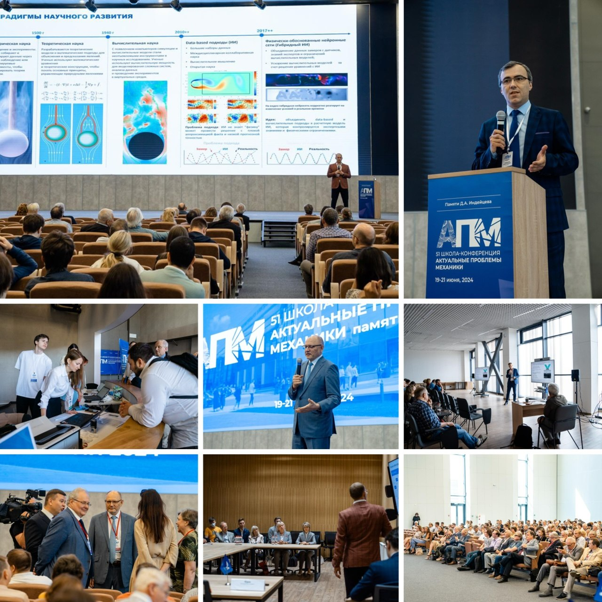
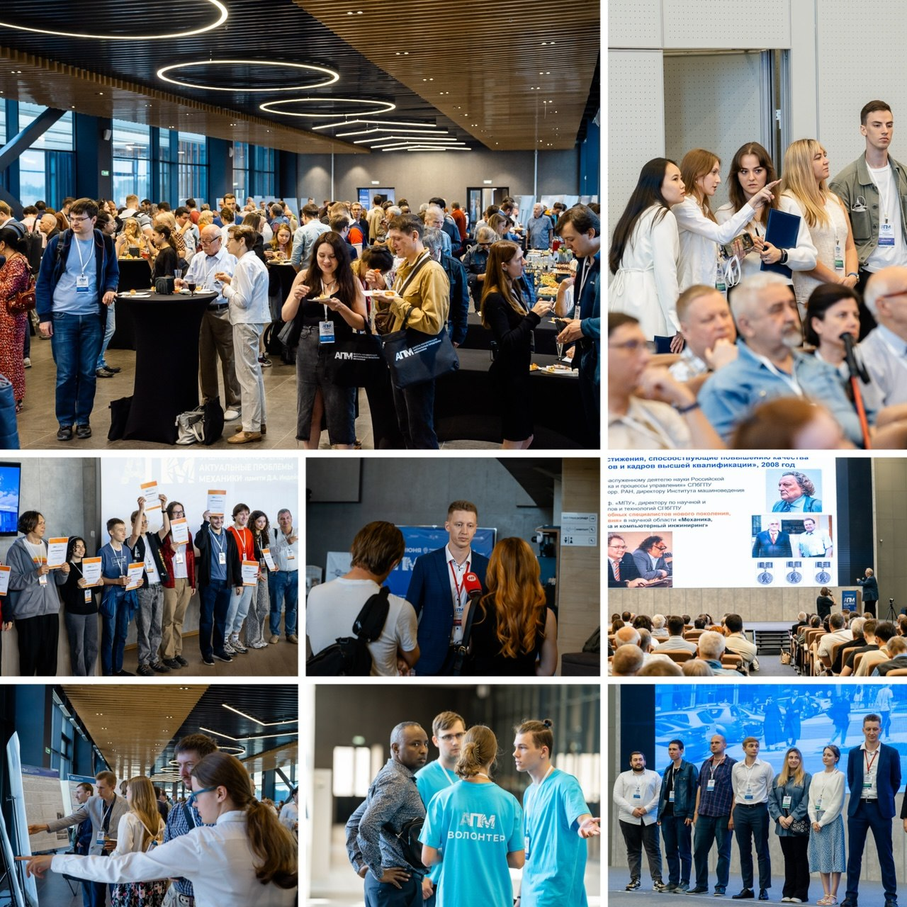
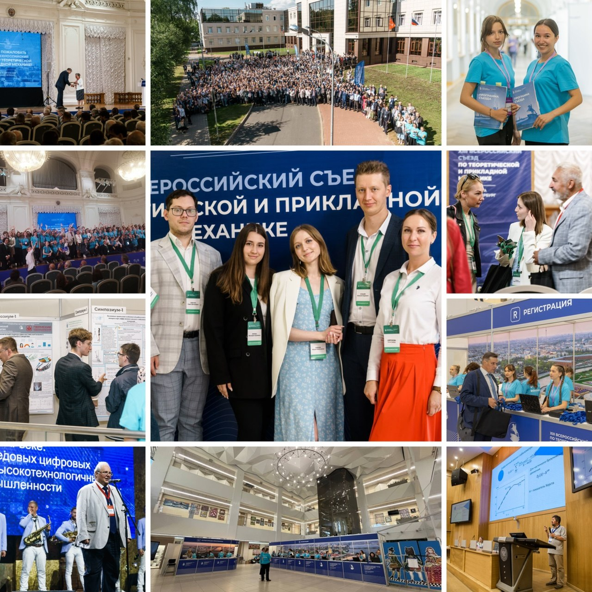
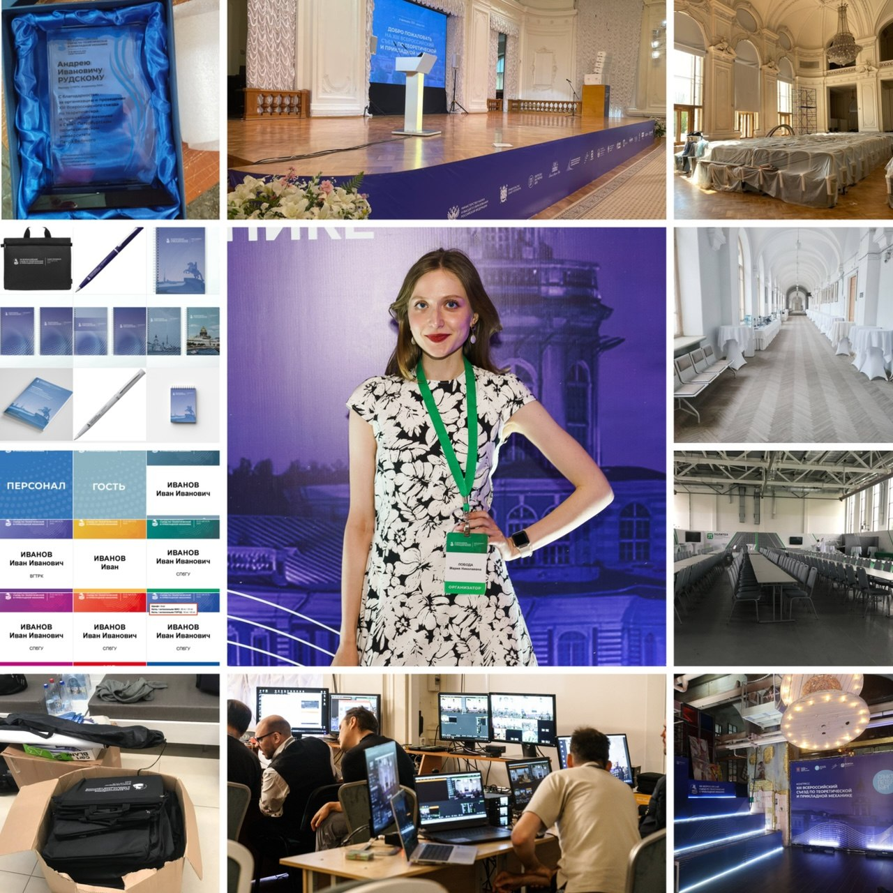
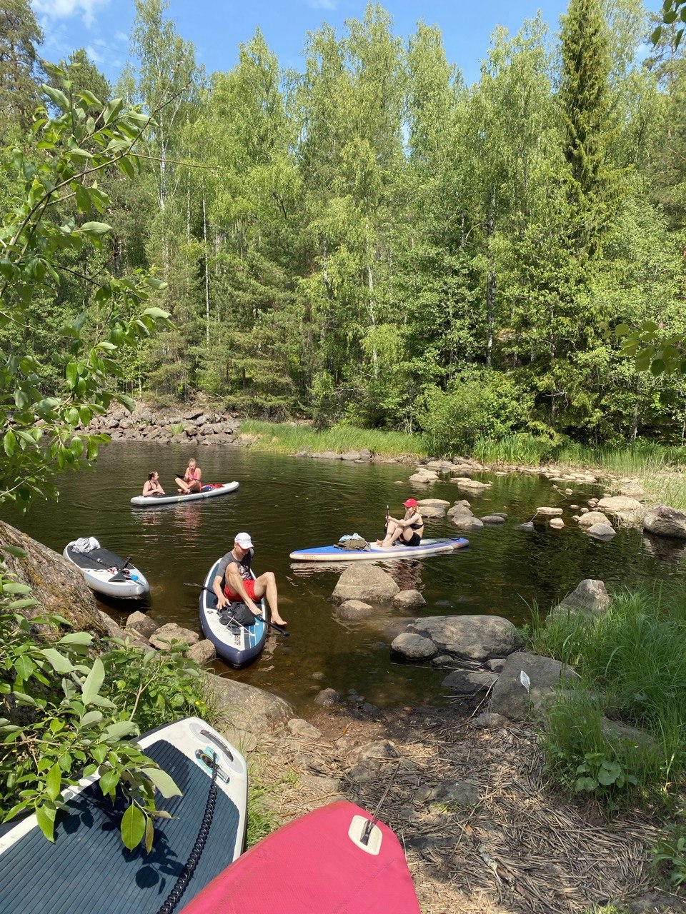

Education
· Project Management Professional Program, Skillbox | 2024-2025
· MSc, Mathematical Modeling — SPbPU | 2024
· BSc, Mechanics and Mathematical Modeling — SPbPU | 2022
I am an Event Producer & Project Coordinator with 5+ years of experience across scientific, educational, corporate, and technical environments.
My background combines coordination of large-scale scientific events and internal corporate initiatives with project coordination across marketing and IT environments. Over time, I expanded into Agile product environments, strengthening my process organization, communication, and cross-functional collaboration skills within technical teams.
I hold a technical university degree in mathematical modeling and additionally completed a professional project management program, which helped me combine structured thinking with practical coordination experience.
I feel most confident in dynamic environments where structure, adaptability, and communication matter equally. I enjoy organizing complex workflows, supporting teams through collaborative projects, and creating calm and effective working environments.
Experience
My professional experience combines large-scale scientific events, internal corporate initiatives, and project coordination across marketing and IT environments.
Over the years, I coordinated conferences, hybrid events, internal initiatives, and stakeholder-heavy projects involving organizing committees, technical teams, volunteers, partners, and international participants. My work included logistics, scheduling, operational workflows, documentation, communication, and onsite coordination across high-responsibility event environments.
In marketing projects, I supported communication and coordination between marketers, designers, and clients while contributing to operational organization and content preparation processes.
In recent years, I also expanded into IT project coordination in Agile/Scrumban environments, supporting backlog organization, sprint processes, documentation, and cross-functional communication within a product development team.
A concise professional journey focused on coordination growth and operational ownership.
Gazprom Neft-Polytech R&D Center / SPbPU
IT-Incubator
Portfolio
Selected projects highlighting operational ownership, stakeholder coordination, logistics, and full-cycle event delivery.


Actual Problems of Mechanics (APM) is a recurring international scientific conference series focused on mechanics, engineering, and applied research, bringing together researchers, universities, and technical specialists from across Russia and abroad.
Large-scale nationwide scientific congress bringing together researchers, universities, engineering schools, and academic institutions from across Russia and international partner organizations.



What I Coordinated
Full-cycle coordination of conferences and large-scale events, including logistics, scheduling, operational workflows, and onsite support.
Coordination across organizing committees, partners, vendors, volunteers, technical teams, and senior stakeholders.
Roadmaps, operational guides, schedules, participant materials, reporting, and internal communication materials.
Support for onsite, online, and hybrid event delivery, including remote participant workflows and technical communication.
Recruitment, onboarding, delegation, and scheduling for volunteer and support teams during high-load event cycles.
Participant communication, onboarding, support, and networking coordination to create smooth and comfortable event experiences.
Skills & Tools
Skills, workflows and tools used to keep projects organized, collaborative, and running smoothly.
IT Projects
Experience working in technical environments with Agile workflows, Jira/Confluence processes, documentation, and communication between technical and non-technical teams.
Coordination of tasks, priorities, dependencies, and operational workflows across multimedia and product-focused projects.
Sprint coordination, backlog visibility, structured handoffs, and support across cross-functional teams.
Currently building personal projects with AI-assisted coding tools, including this portfolio website and a word game prototype that will soon be published on GitHub.
Contacts